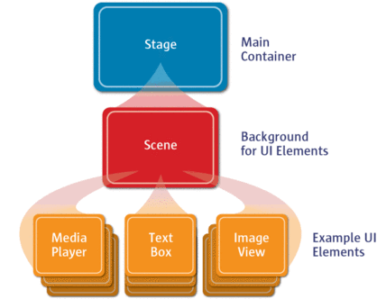

<!DOCTYPE html>
<html lang="en">
  <head>
    <meta charset="utf-8" />
    <meta name="viewport" content="width=device-width, initial-scale=1.0, maximum-scale=1.0, user-scalable=no" />

    <title>reveal-md</title>
    <link rel="shortcut icon" href="./favicon.ico"/>
    <link rel="stylesheet" href="./dist/reveal.css" />
    <link rel="stylesheet" href="./assets/theme/myblack.css" id="theme" />
    <link rel="stylesheet" href="./css/highlight/zenburn.css" />

  </head>
  <body>
    <div class="reveal">
      <div class="slides"><section  data-markdown><script type="text/template">## Interfaces graphiques en Java
## JavaFX
### Université du Havre - LITIS
#### L2 Math-Info - Spécialisation informatique
[D. Olivier](http://litis.univ-lehavre.fr/~olivier/PagePerso)</script></section><section ><section data-markdown><script type="text/template">
## Plan du cours
* [Généralités](#/2)
* [Installation](#/4)
* [Appéritif : Hello world](#/11)
* [Cycle de vie](#/8)
* [Traitement des événements (intro)](#/10)
* [Utilisation de conteneur (intro)](#12)
* [Graphiques - formes (bases)](#14)
* [Propriétés](#16)
* [Look and feel des nœuds](#18)</script></section><section data-markdown><script type="text/template">## Plan du cours
* [Architecture JavaFX](#20)
* [Les conteneurs - Layout](#22)
* [Gestion des événements](#24)
* [Gestion des événements par l'exemple](#26)
* [Les éléments d'interface](#28)
* [Les panneaux spécialisés](#30)
* [Les boites de dialogue](#32)
* [JavFX et les threads](#34)</script></section></section><section  data-markdown><script type="text/template"># Généralités</script></section><section ><section data-markdown><script type="text/template">## Caractéristiques principales :
* Choix de deux modes : interfaces basées sur du code Java (API) et/ou sur un
langage de description utilisant une syntaxe XML : __FXML__
* Création d'un outil interactif `Scene Builder` pour créer graphiquement des
interfaces et générer automatiquement du code FXML
* Utilisation possible de feuilles de styles CSS pour adapter la présentation sans
toucher au code (créer des thèmes, des skins, etc.)
* Application du modèle de conception Builder avec un chaînage de méthodes (Fluent API)</script></section><section data-markdown><script type="text/template">## Déclaratif _vs_ procédural
* Manière déclarative
  * En décrivant l'interface dans un fichier FXML (syntaxe XML)
  * L'utilitaire graphique Scene Builder facilite la création et la gestion des fichiers FXML
  * L'interface peut être créée par un designer (sans connaissance Java, ou presque...)
  * Séparation entre présentation et la logique de l'application ( MVC )</script></section><section data-markdown><script type="text/template">## Déclaratif _vs_ procédural
* Manière procédurale
  * Utilisation d'API pour construire l'interface avec du code Java
  * Création et manipulation dynamique des interfaces
  * Création d'extensions et variantes (par héritage)
  * Homogénéité des sources de l'application

  * Il est possible de mélanger les deux techniques au sein d'une même
  application (l'API ```javafx.fxml``` permet de faire le lien entre les deux).</script></section></section><section ><section data-markdown><script type="text/template"># Installation</script></section><section data-markdown><script type="text/template">## DIfférentes installations

<iframe frameborder="0" width="100%" height="500pt" src="https://openjfx.io/openjfx-docs/#install-javafx"></iframe></script></section><section data-markdown><script type="text/template">## Installation JavaFX sous Eclipse
* Plusieurs façons de faire :
  * Télécharger la distribution préconfigurée depuis le site [e(fx)clipse](http://efxclipse.bestsolution.at/install.html#all-in-one)
  * Utiliser l'[ajout de software sous eclipse](http://www.eclipse.org/efxclipse/install.html)</script></section><section data-markdown><script type="text/template">## Installation de base
* Télécharger le fichier [jar](http://gluonhq.com/download/scene-builder-jar/)
* Ensuite `java -jar scenebuilder-all-8.3.0-all.jar` dans le répertoire où se trouve le `jar`.</script></section></section><section  data-markdown><script type="text/template">

# Apéritif : **_Hello world_**</script></section><section ><section data-markdown><script type="text/template">
## Métaphore théâtrale
* `Stage` : (estrade, scène en français >:) ) endroit où a lieu l'action, où se déroule la scène
* `Scene` : tableau ou séquence faisant intervenir les acteurs
* `Controls` : acteurs, figurants, éléments du décor, ... ( éléments actifs/passifs ) qui font partie de la scène.</script></section><section data-markdown><script type="text/template">## Réalisation
<div style="float:left;width:450px;font-size:70%;">
      <ul>
        <li> L'application est codée en créant une classe dérivée de <code>Application</code>&nbsp;;</li>
        <li> La fenêtre principale d'une application est représentée par un objet de type <code>Stage</code>&nbsp;;</li>
        <li> L'interface est un objet de type `Scene` qu'il faut créer et associer au <code>Stage</code>&nbsp;;</li>
        <li> La scène est composée des différents composants de l'interface graphique. </li>
        qui sont des objets de type <code>Node</code>.</li>
      </ul>
    </div>
   <div style="float:left;width:450px;font-size:70%;">
      <br>
      <caption><span style="font-size:10pt;">Architecture<br clear="all" />
  </div></script></section><section data-markdown><script type="text/template">## Un peu de code
```
package application;

import javafx.application.Application;
import javafx.scene.Scene;
import javafx.stage.Stage;
import javafx.scene.control.Button;

public class BonjourToutLeMonde extends Application {
	public void start(Stage primaryStage) throws Exception {
		primaryStage.setTitle("Première application JavaFX");
		Button btnHello = new Button("Salut tout le monde");
		Scene scene = new Scene(btnHello, 250, 100);
		primaryStage.setScene(scene);
		primaryStage.show();
	}

		public static void main(String[] args) {
		launch(args);
	}
}
```</script></section><section data-markdown><script type="text/template">## Commentaires sur le code
* Des imports doivent être fait `Application`, `Stage`, `Scene` + le composant `Button`
* La méthode `main()` lance uniquement la méthode `launch()` héritée d'`Application`.
    * D'autres opérations d'initialisation peuvent être réalisées avant `launch()`.</script></section></section><section  data-markdown><script type="text/template"># Cycle de vie</script></section><section ><section data-markdown><script type="text/template">
## Cycle de vie
* Le point d'entrée d'une application JavaFX est constitué d'une
instance d'une classe dérivée `Application`
* `Application.launch()`
  1. Crée une instance de la classe qui hérite d'`Application`
  2. Appelle la méthode `init()`
  3. Appelle la méthode `start()` et lui passe en paramètre une instance de `Stage` (_primary stage_)
  4. Attend ensuite que l'application se termine, 2 cas :
    * La dernière fenêtre de l'application a été fermée et `Platform.isImplicitExit()` retourne `true`
    * L'application appelle `Platform.exit()`
  5. Appelle la méthode `stop()`.</script></section><section data-markdown><script type="text/template">## Cycle de vie
* La méthode `launch()` est lancée depuis la méthode `main()`. (facultatif depuis java 1.8)
* Des paramètres de lancement peuvent être récupérés par [`getParameters()`](http://docs.oracle.com/javase/8/javafx/api/javafx/application/Application.html#getParameters) dans la méthode `init()` qui retourne un objet de type [Parameters](http://docs.oracle.com/javase/8/javafx/api/javafx/application/Application.Parameters.html#Parameters).
* Au lancement d'une application JavaFX, il est possible de passer des paramètres nommés ou anonymes.

 `java Bonjour.class --steps=50 --mode=Debug 100 FR Test`</script></section><section data-markdown><script type="text/template">## Cycle de vie et threads
* La méthode [`start()`](http://docs.oracle.com/javase/8/javafx/api/javafx/application/Application.html#start-javafx.stage.Stage-) est abstraite et doit être redéfinie.
* Les méthodes [`init()`](http://docs.oracle.com/javase/8/javafx/api/javafx/application/Application.html#init--)  et [`stop()`](http://docs.oracle.com/javase/8/javafx/api/javafx/application/Application.html#stop--) sont définies par défaut comme ne faisant rien.
* La méthode `start()` s'exécute dans le JavaFX Application Thread dans lequel l'interface est construite. C'est dans ce thread que doivent être réalisées les
opérations qui agissent sur des composants attachés à une scène placée dans une fenêtre.</script></section></section><section  data-markdown><script type="text/template"># Traitement des événements</script></section><section ><section data-markdown><script type="text/template">## Gestion des actions des utilisateurs

* Si dans notre exemple on veut que le clic sur le bouton déclenche une action, il faut traiter l'événement associé.
* La méthode [`setOnAction()`](http://docs.oracle.com/javase/8/javafx/api/javafx/scene/control/ButtonBase.html#setOnAction-javafx.event.EventHandler-) du bouton permet d'enregistrer un gestionnaire d'événements [`EventHandler<ActionEvent>`](http://docs.oracle.com/javase/8/javafx/api/javafx/event/EventHandler.html).
* C'est une interface fonctionnelle possédant la méthode [`handle(event)`](http://docs.oracle.com/javase/8/javafx/api/javafx/event/EventHandler.html#handle-T-) qui définit l'action à effectuer.</script></section><section data-markdown><script type="text/template">## Gestion des actions des utilisateurs
### Exemple

<pre><code data-trim data-noescape>
package application;

import javafx.application.Application;
import javafx.scene.Scene;
import javafx.stage.Stage;
import javafx.scene.control.Button;

public class BonjourToutLeMonde extends Application {
	public void start(Stage primaryStage) throws Exception {
		primaryStage.setTitle("Première application JavaFX");
		Button btnHello = new Button("Salut tout le monde");
		<mark>btnHello.setOnAction(event -> System.out.println("Bonjour tout le monde !"));</mark>
		Scene scene = new Scene(btnHello, 250, 100);
		primaryStage.setScene(scene);
		primaryStage.show();
	}

		public static void main(String[] args) {
		launch(args);
	}
}
</code></pre></script></section></section><section  data-markdown><script type="text/template"># Utilisation de conteneur</script></section><section ><section data-markdown><script type="text/template">## Panneaux (`xxPane`)
<div style="float:left;width:450px;font-size:70%;">
  <ul>
    <li>Dans l'exemple précédent le `Button` est placé directement dans la `Scene` et occupe la fenêtre entière ;</li>
    <li>En général on place les éléments d'interface (nodes) dans des conteneurs `xxxPane` ;</li>
    <li>Ensuite on ajoute le conteneur dans la scene.</li>
  </ul>
</div>
<div style="float:left;width:450px;font-size:70%;">


</div></script></section><section data-markdown><script type="text/template">## Le code

<pre><code data-trim data-noescape>
package application;

import javafx.application.Application;
import javafx.scene.Scene;
import javafx.scene.layout.BorderPane;
import javafx.stage.Stage;
import javafx.scene.control.Button;

public class BonjourToutLeMonde extends Application {
	public void start(Stage primaryStage) throws Exception {
		primaryStage.setTitle("Première application JavaFX");
        <mark>BorderPane root = new BorderPane();</mark>
		Button btnHello = new Button("Salut tout le monde");
		btnHello.setOnAction(event -> System.out.println("Bonjour tout le monde !"));
        <mark>root.setCenter(btnHello);</mark>
		Scene scene = new Scene(<mark>root</mark>, 250, 100);
		primaryStage.setScene(scene);
		primaryStage.show();

}

		public static void main(String[] args) {
		launch(args);
	}
}
</code></pre></script></section><section data-markdown><script type="text/template">## Les panneaux
 * Ils peuvent contenir d'autres panneaux.
 <!-- .element: width="550px" --></script></section></section><section  data-markdown><script type="text/template"> # Graphiques - formes</script></section><section ><section data-markdown><script type="text/template">## Coordonnées dans un panneau
<div style="float:left;width:450px;font-size:70%;">
  <ul>
    <li> Coin gauche d'une scène (0, 0) ;</li>
    <li> Axe des abscisses croissant vers la droite ;</li>
    <li> Axe des ordonnées croissant vers le bas ;</li>
    <li> Coordonnées en pixels.</li>
  </ul>
</div>
<div style="float:left;width:400px;font-size:70%;">


</div></script></section><section data-markdown><script type="text/template">## Le code
```
package application;

import javafx.application.Application;
import javafx.scene.Scene;
import javafx.scene.layout.Pane;
import javafx.scene.paint.Color;
import javafx.scene.shape.Circle;
import javafx.stage.Stage;

public class DessineCercle1 extends Application {

	@Override
	public void start(Stage primaryStage) throws Exception {
		// Création d'un cercle
		Circle cercle = new Circle();
		cercle.setCenterX(100);
		cercle.setCenterY(100);
		cercle.setRadius(50);
		cercle.setStroke(Color.BLACK);
		cercle.setFill(Color.WHITE);

		// Création d'un panneau dans lequel on ajoute le cercle
		Pane panneau = new Pane();
		panneau.getChildren().add(cercle);

		// Création d'une scene 200 x 200 px à partir du panneau, on place la
		// scene dans le stage
		Scene scene = new Scene(panneau, 200, 200);
		primaryStage.setTitle("Dessine cercle");
		primaryStage.setScene(scene);
		primaryStage.show();
	}

	public static void main(String[] args) {
		launch(args);
	}
}
```</script></section><section data-markdown><script type="text/template">## Formes de base

*  8 formes principalement :

</script></section></section><section  data-markdown><script type="text/template"># Propriétés</script></section><section ><section data-markdown><script type="text/template">## Introduction

* La notion de propriété est très présente en javaFX ;
* Dans l'exemple précédent, la position du centre du cercle est statique (100,100) et au centre de la fenêtre ;
* Si nous changeons la taille de la fenêtre comment faire pour que cela reste correct ?
* Pour faire cela, il faut que le centre du du cercle soit lié aux dimension du panneau.
* C'est le rôle des propriétés qui permettent de lier des objets.</script></section><section data-markdown><script type="text/template">## Le code
```
package application;

import javafx.application.Application;
import javafx.scene.Scene;
import javafx.scene.layout.Pane;
import javafx.scene.paint.Color;
import javafx.scene.shape.Circle;
import javafx.stage.Stage;

public class DessineCercle2 extends Application {

	@Override
	public void start(Stage primaryStage) throws Exception {
		// Création du panneau
		Pane panneau = new Pane();

		// Création d'un cercle
		Circle cercle = new Circle();
		cercle.centerXProperty().bind(panneau.widthProperty().divide(2));
        cercle.centerYProperty().bind(panneau.heightProperty().divide(2));
		cercle.setRadius(50);
		cercle.setStroke(Color.BLACK);
		cercle.setFill(Color.WHITE);

		// On ajoute le cercle
		panneau.getChildren().add(cercle);

		// Création d'une scene 200 x 200 px à partir du panneau, on place la
		// scene dans le stage
		Scene scene = new Scene(panneau, 200, 200);
		primaryStage.setTitle("Dessine cercle");
		primaryStage.setScene(scene);
		primaryStage.show();
	}

	public static void main(String[] args) {
		launch(args);
	}
}
```</script></section><section data-markdown><script type="text/template">## Propriétés

* Une propriété est un élément d'une classe que l'on peut manipuler
à l'aide de getters (lecture) et de setters (écriture).
*  Les propriétés sont généralement représentées par des attributs de
la classe mais elles pourraient aussi être stockées dans une base de
données ou autre système d'information.
* En plus des méthodes `get...()` et `set...()` , les propriétés JavaFX
possèdent une troisième méthode `...Property()` qui retourne un
objet qui implémente l'interface Property `[ ... : nomDeLaPropriété ]`.</script></section><section data-markdown><script type="text/template">## Intérêt des propriétés
* Elles peuvent être liées entre-elles (Binding), c-à-d que le changement
d'une propriété entraîne automatiquement la mise à jour d'une autre.
* Elles peuvent déclencher un événement lorsque leur valeur change et
un gestionnaire d'événement (Listener) peut réagir en conséquence.</script></section><section data-markdown><script type="text/template">## Liaison de propriété
* La cible surveille les changements au niveau de la source et se met à jour en conséquence ;
* La syntaxe pour réaliser ce type de liaison est `cible.bind(source)` ;

```
package application;

import javafx.beans.property.IntegerProperty;
import javafx.beans.property.SimpleIntegerProperty;
import javafx.beans.value.ObservableValue;

public class ExempleBind1 {

	public static void main(String[] s) {
		IntegerProperty proprieteDeA = new SimpleIntegerProperty(-10); // A
		IntegerProperty proprieteDeB = new SimpleIntegerProperty(10); // B
		proprieteDeB.addListener(
				(ObservableValue<? extends Number> observable, Number ancienneValeur, Number nouvelleValeur) -> {
					System.out.printf("B a changé : %d -> %d\n", ancienneValeur, nouvelleValeur);
				});

		proprieteDeB.bind(proprieteDeA); // Liaison. B a changé : 10 -> -10

		proprieteDeA.set(33);            // B a changé : -10 -> 33
	}
}
```</script></section><section data-markdown><script type="text/template">## Liaison unidirectionnelle, bidirectionnelle
<div style="float:left;width:450px;font-size:70%;">

  

</div>
<div style="float:left;width:450px;font-size:70%;">

  

</div>
<div style="float:left;width:900px;font-size:70%;">

```
package application;

import javafx.beans.property.IntegerProperty;
import javafx.beans.property.SimpleIntegerProperty;
import javafx.beans.value.ObservableValue;

public class ExempleBind2 {
	public static void main(String[] s) {
		IntegerProperty proprieteDeA = new SimpleIntegerProperty(-10); // A
		IntegerProperty proprieteDeB = new SimpleIntegerProperty(10); // B
		proprieteDeB.addListener(
				(ObservableValue<? extends Number> observable, Number ancienneValeur, Number nouvelleValeur) -> {
					System.out.printf("B a changé : %d -> %d\n", ancienneValeur, nouvelleValeur);
				});
		proprieteDeA.addListener(
				(ObservableValue<? extends Number> observable, Number ancienneValeur, Number nouvelleValeur) -> {
					System.out.printf("A a changé : %d -> %d\n", ancienneValeur, nouvelleValeur);
				});
		proprieteDeB.bindBidirectional(proprieteDeA);

		proprieteDeA.set(33);
		proprieteDeB.set(-33);
	}
}
```</script></section><section data-markdown><script type="text/template">## Suppresion d'un lien, rebind
* Il est possible de casser une liaison entre deux propriétés en appelant la méthode `unbind()` ;
* Dans le cas d'une liaison bidirectionnelle on utilise `unbindBidirectionnal()` ;
* Le rebind (`bind()` sur un autre objet) sur une liaison unidirectionnelle casse l'ancienne liaison si elle existe ;
* Le rebind sur une liaison bidirectionnelle ne casse pas l'ancienne liaison si elle existe ;</script></section><section data-markdown><script type="text/template">## Expression
* On peut propager des expressions avec `add`, `subtract`, `multiply`, et `divide`.

```
package application;

import javafx.beans.property.IntegerProperty;
import javafx.beans.property.SimpleIntegerProperty;
import javafx.beans.value.ObservableValue;

public class ExempleBind3 {

	public static void main(String[] s) {
		IntegerProperty proprieteDeA = new SimpleIntegerProperty(-10); // A
		IntegerProperty proprieteDeB = new SimpleIntegerProperty(10); // B
		IntegerProperty proprieteDeC = new SimpleIntegerProperty();
		proprieteDeC.addListener(
				(ObservableValue<? extends Number> observable, Number ancienneValeur, Number nouvelleValeur) -> {
					System.out.printf("D a changé : %d -> %d\n", ancienneValeur, nouvelleValeur);
				});
		proprieteDeC.bind(proprieteDeA.subtract(proprieteDeB)); // D a changé : 0 -> -20

		proprieteDeA.set(10);  // D a changé : -20 -> 0
		proprieteDeB.set(-33); // D a changé : 0 -> 43
	}
}
```</script></section></section><section  data-markdown><script type="text/template"># Look and feel
# Style des nœuds</script></section><section ><section data-markdown><script type="text/template">## JavaFX CSS
* A l'origine les CSS (Cascading Style Sheet) ont été élaborées (par le W3C) pour les pages web, afin de pouvoir décrire la présentation des éléments HTML.
* Un des buts de son utilisation est de séparer le contenu (HTML) de la présentation (CSS) des pages web.
* Les CSS sont des éléments textuels, généralement enregistrés dans des fichiers, qui définissent des règles de style.
* JavaFX a repris le concept et des feuilles de style CSS peuvent être utilisées pour définir l'aspect (le look, le style)
* Le style des éléments d'interface peut être décrit à l'aide d'une feuille de style ou dans le code.</script></section><section data-markdown><script type="text/template">## Style
* Une définition de style est constituée :
  * D'un **sélecteur** (le nom du style)
  * D'un **ensemble de règles** sous la forme de paires **propriété  valeur**
* Le sélecteur est un identificateur qui servira à définir les éléments sur lesquels s'appliqueront les règles.
* Chaque règle commence avec le préfixe `–fx–`, et est de la forme `propriété: valeur`.
* Les règles sont séparées par des `;`
* L'ensemble des règles est entouré par des accolades `{ }` et ce bloc suit le sélecteur.</script></section><section data-markdown><script type="text/template">## Exemple
* Fichier CSS :
```
 .circle {
    -fx-stroke: black;
    -fx-fill: red;
 }
```
* Dans le code (déconseillé) :
```
cercle.setStyle(“-fx-stroke: black; -fx-fill: red;”);
```
* Equivalent à :
```
cercle.setStroke(Color.BLACK);
cercle.setFill(Color.RED);
```</script></section><section data-markdown><script type="text/template">## Le code
* Version avec les règles CSS dans le code (déconseillé).

<pre><code data-trim data-noescape>
package application;

import javafx.application.Application;
import javafx.scene.Scene;
import javafx.scene.layout.Pane;
import javafx.scene.shape.Circle;
import javafx.stage.Stage;

public class UtilisationCSS1 extends Application {
	@Override
	public void start(Stage primaryStage) throws Exception {
		// Création du panneau
		Pane panneau = new Pane();

		// Création d'un cercle
		Circle cercle = new Circle();
		cercle.centerXProperty().bind(panneau.widthProperty().divide(2));
    cercle.centerYProperty().bind(panneau.heightProperty().divide(2));
		cercle.setRadius(50);
		<mark>cercle.setStyle("-fx-stroke: black; -fx-fill: red;");</mark>

		// On ajoute le cercle
		panneau.getChildren().add(cercle);

		// Création d'une scene 200 x 200 px à partir du panneau, on place la
		// scene dans le stage
		Scene scene = new Scene(panneau, 200, 200);
		primaryStage.setTitle("Dessine cercle");
		primaryStage.setScene(scene);
		primaryStage.show();
	}

		public static void main(String[] args) {
		launch(args);
	}
}

</code></pre></script></section><section data-markdown><script type="text/template">## Le code avec un fichier CSS
* Chaque objet Node possède différentes variables ou propriétés qui permettent de lui associer un style.
  * Sélecteur de classe : Liste de noms de classes de styles (au sens CSS) utilisés our appliquer à ce nœud un style basé sur un sélecteur de classe (`ObservableList<String>`)
  * Sélecteur d'id :  Identificateur unique du nœud qui permet de lui associer un style avec un sélecteur d'Id (String)

* Le fichier css
  * Nom de sélecteur de classe (en minuscule) préfixé par un .
  * Nom de sélecteur d'id préfixé par un #
  * Si c'est un nom composé, on utilise un tiret (`TextField` devient `text-field`)</script></section><section data-markdown><script type="text/template">## Le code avec un fichier CSS

* Le fichier `application.css`

```
.circle {
   -fx-stroke: black;
   -fx-fill: red;
}
```</script></section><section data-markdown><script type="text/template">## Le code avec un fichier CSS

<pre><code data-trim data-noescape>
package application;

import javafx.application.Application;
import javafx.scene.Scene;
import javafx.scene.layout.Pane;
import javafx.scene.shape.Circle;
import javafx.stage.Stage;

public class UtilisationCSS2 extends Application {
	@Override
	public void start(Stage primaryStage) throws Exception {
		// Création du panneau
		Pane panneau = new Pane();

		// Création d'un cercle
		Circle cercle = new Circle();
		cercle.centerXProperty().bind(panneau.widthProperty().divide(2));
		cercle.centerYProperty().bind(panneau.heightProperty().divide(2));
		cercle.setRadius(50);
		<mark>cercle.getStyleClass().add("circle");</mark>

		// On ajoute le cercle
		panneau.getChildren().add(cercle);

		// Création d'une scene 200 x 200 px à partir du panneau, on place la
		// scene dans le stage
		Scene scene = new Scene(panneau, 200, 200);
		<mark>scene.getStylesheets().add(getClass().getResource("application.css").toExternalForm());</mark>
		primaryStage.setTitle("Dessine cercle");
		primaryStage.setScene(scene);
		primaryStage.show();
	}

		public static void main(String[] args) {
		launch(args);
	}

}
</code></pre></script></section><section data-markdown><script type="text/template">## Un autre Exemple

<pre><code data-trim data-noescape>
package application;

import javafx.application.Application;
import javafx.scene.Scene;
import javafx.scene.control.Button;
import javafx.scene.layout.StackPane;
import javafx.stage.Stage;

public class RotationBouton extends Application {

	@Override
	public void start(Stage primaryStage) throws Exception {
		// Création d'un panneau et d'un bouton que l'on ajoute
		StackPane panneau = new StackPane();       // Creation d'un panneau
		panneau.getStyleClass().add("stack-pane"); // On précise le style au niveau du panneau
		Button btOK = new Button("OK");            // Création du bouton
		panneau.getChildren().add(btOK);           // On ajoute le bouton

		// Création de la scene qui contient le panneau
		Scene scene = new Scene(panneau, 200, 250);
		// On fixe le css
		scene.getStylesheets().add(getClass().getResource("application.css").toExternalForm());
		primaryStage.setTitle("Demo CSS");         // Titre de la scene
		primaryStage.setScene(scene);              // Place la scene dans l'ensemble
		primaryStage.show();                       // Affiche l'ensemble
	}
	public static void main(String[] args) {
		launch(args);
	}
}
</code></pre></script></section><section data-markdown><script type="text/template">## Le fichier CSS
```
.button {
 	-fx-border-color: blue;
 }

 .stack-pane {
 	-fx-rotate: 45;
 	-fx-border-color: red;
 	-fx-background-color: lightgray;
 }
 ```</script></section></section><section  data-markdown><script type="text/template"># Architecture JavaFX</script></section><section ><section data-markdown><script type="text/template">## Architecture générale
</script></section><section data-markdown><script type="text/template">## Graphe de scène
<div style="float:left;width:450px;font-size:70%;">
<ul>
  <li>Le graphe de scène représente la structure hiérarchique de l'interface graphique.</li>
  <li> C'est un arbre orienté avec : </li>
  <ul>
    <li>une racine (root)</li>
    <li>des nœuds (nodes)</li>
    <li>des arcs qui représentent les relations parent-enfant.</li>
  </ul>
  <li>Les nœuds (nodes) peuvent être de trois types :</li>
  <ul>
    <li>racine</li>
    <li>nœud intermédiaire (branching node)</li>
    <li>feuille (leaf).</li>
</ul>
</div>
<div style="float:left;width:450px;font-size:70%;">


</div></script></section><section data-markdown><script type="text/template">## Feuilles de l'arbre
* Les feuilles de l'arbre sont généralement constitués de composants
visibles ( boutons, champs texte, ... )
* les nœuds intermédiaires (y compris la racine) sont généralement des éléments de structuration type conteneur ( HBox, VBox, Pane, StackPane, BorderPane, ... ).

</script></section><section data-markdown><script type="text/template">## La classe `Node`
* Tous les éléments contenus dans un graphe de scène sont des objets
qui ont comme classe mère la classe [`Node`](http://docs.oracle.com/javase/8/javafx/api/javafx/scene/Node.html).

</script></section><section data-markdown><script type="text/template">## Les sous classes de `Node`
* Parmi les sous classes, on distingue :
    * Les formes primitives ([`Shape`](http://docs.oracle.com/javase/8/javafx/api/javafx/scene/shape/Shape.html), [`Shape3D`](http://docs.oracle.com/javase/8/javafx/api/javafx/scene/shape/Shape3D.html)) 2D et 3D
      * [`Line`](http://docs.oracle.com/javase/8/javafx/api/javafx/scene/shape/Line.html) , [`Circle`](http://docs.oracle.com/javase/8/javafx/api/javafx/scene/shape/Circle.html) , [`Rectangle`](http://docs.oracle.com/javase/8/javafx/api/javafx/scene/shape/Rectangle.html) , [`Box`](http://docs.oracle.com/javase/8/javafx/api/javafx/scene/shape/Box.html) , [`Cylinder`](http://docs.oracle.com/javase/8/javafx/api/javafx/scene/shape/Cylinder.html) , ...
    * Les conteneurs (Layout-Pane) qui gère la mise en forme (layout) des composants enfants et qui ont comme classe mère [`Pane`](http://docs.oracle.com/javase/8/javafx/api/javafx/scene/layout/Pane.html)
      * [`AnchorPane`](http://docs.oracle.com/javase/8/javafx/api/javafx/scene/layout/AnchorPane.html), [`BorderPane`](http://docs.oracle.com/javase/8/javafx/api/javafx/scene/layout/BorderPane.html), [`GridPane`](http://docs.oracle.com/javase/8/javafx/api/javafx/scene/layout/GridPane.html), [`HBox`](http://docs.oracle.com/javase/8/javafx/api/javafx/scene/layout/HBox.html) ....
    * Les composants standard (Controls) qui hérite de la classe [̀`Control`](http://docs.oracle.com/javase/8/javafx/api/javafx/scene/control/Control.html)
      * [`Label`](http://docs.oracle.com/javase/8/javafx/api/javafx/scene/control/Label.html), [`Button`](http://docs.oracle.com/javase/8/javafx/api/javafx/scene/control/Button.html) , [`TextField`](http://docs.oracle.com/javase/8/javafx/api/javafx/scene/control/TextField.html)  ....
    * Les composants spécialisés comme [`ImageView`](http://docs.oracle.com/javase/8/javafx/api/javafx/scene/image/ImageView.html), [`Canvas`](http://docs.oracle.com/javase/8/javafx/api/javafx/scene/canvas/Canvas.html) ....</script></section></section><section  data-markdown><script type="text/template">
# Les conteneurs</script></section><section ><section data-markdown><script type="text/template">
## Les conteneurs

* Ils héritent de [`Pane`](http://docs.oracle.com/javase/8/javafx/api/javafx/scene/layout/Pane.html) et de [`Region`](http://docs.oracle.com/javase/8/javafx/api/javafx/scene/layout/Region.html) qui fixent de nombreuses propriétés et méthodes pour tous les conteneurs.
</script></section><section data-markdown><script type="text/template">##  `Region`

* La classe  [`Region`](http://docs.oracle.com/javase/8/javafx/api/javafx/scene/layout/Region.html) définit la structure visuelle ;
* Les différentes zones d'une région sont basées sur la spécification du Box-Model CSS 3.
  * Elles définissent Margin, Border, Paddin, Insets, Contents

</script></section><section data-markdown><script type="text/template">## Structure visuelle
* Elle est déterminée par des propriétés :
  * [`Border`](http://docs.oracle.com/javase/8/javafx/api/javafx/scene/layout/Border.html)
    * Bordure autour de la région
  * [`Background`](http://docs.oracle.com/javase/8/javafx/api/javafx/scene/layout/Background.html)
    * Couleur ou image d'arrière plan de la région
  * Padding
    * Marge autour du contenu de la région ([`Insets`](http://docs.oracle.com/javase/8/javafx/api/javafx/geometry/Insets.html),[`setPadding`](http://docs.oracle.com/javase/8/javafx/api/javafx/scene/layout/Region.html#setPadding-javafx.geometry.Insets-))</script></section><section data-markdown><script type="text/template">## Disposition des composants

* En général, on ajoute des `Nodes` à un `Pane`, puis ce `Pane` à une `Scene` et enfin la `Scene` à un `Stage` ;
* Question :
  * Comment dispose t-on les `Nodes` au niveau du `Pane` ?
  * La disposition des composants est déléguée à des gestionnaires de disposition qui sont associés à des conteneurs.
  * Ils définissent des règles de disposition.
  * Il en existe de plusieurs types.</script></section><section data-markdown><script type="text/template">## Les principaux Layout Panes
Nom | Description
--|--
[`Pane`](http://docs.oracle.com/javase/8/javafx/api/javafx/scene/layout/Pane.html)  | Classe de base des layout panes. On utilise la méthode [`getChildren()`](http://docs.oracle.com/javase/8/javafx/api/javafx/scene/layout/Pane.html#getChildren--) pour manipuler la liste des `Nodes` contenus. Sorte d'ardoise blance, utilisée par exemple pour dessiner.
[`StackPane`](http://docs.oracle.com/javase/8/javafx/api/javafx/scene/layout/StackPane.html)  | Empile les composants enfants les uns au dessus des autres dans l'ordre d'insertion : les premiers "au fond", les derniers "au-dessus".
[`FlowPane`](http://docs.oracle.com/javase/8/javafx/api/javafx/scene/layout/FlowPane.html)  | Place les composants sur une ligne horizontale ou verticale et passe à la ligne ou à la colonne suivante (wrapping) lorsqu'il n'y a plus assez de place disponible.
[`BorderPane`](http://docs.oracle.com/javase/8/javafx/api/javafx/scene/layout/BorderPane.html)  | Permet de placer les composants enfants dans cinq zones : Top, Bottom, Left, Right et Center.
[`GridPane`](http://docs.oracle.com/javase/8/javafx/api/javafx/scene/layout/GridPane.html)  | Permet de disposer les composants enfants dans une grille flexible ( arrangement en lignes et en colonnes ), un peu à la manière d'une table HTML.
[`HBox`](http://docs.oracle.com/javase/8/javafx/api/javafx/scene/layout/HBox.html)  | Placement des nœuds horizontalement.
[`VBox`](http://docs.oracle.com/javase/8/javafx/api/javafx/scene/layout/VBox.html)  | Placement des nœuds verticalement.</script></section><section data-markdown><script type="text/template">## `FlowPane`

* On peut fixer :
  * L'orientation `Orientation.HORIZONTAL` ou `Orientation.VERTICAL` ;
  * La distance entre deux nœuds (en pixels)

```
package application;

import javafx.application.Application;
import javafx.geometry.Orientation;
import javafx.scene.Scene;
import javafx.scene.control.Button;
import javafx.scene.layout.FlowPane;
import javafx.stage.Stage;

public class ExFlowPane extends Application {

	@Override
	public void start(Stage stage) {
		stage.setTitle("FlowPane");
		stage.setWidth(500);
		stage.setHeight(400);
		FlowPane flow = new FlowPane(Orientation.HORIZONTAL);
		flow.setVgap(8);
		flow.setHgap(4);
		flow.setPrefWrapLength(300);
		for (int i = 0; i < 10; i++) {
			flow.getChildren().add(new Button("Bouton " + i));
		}
		Scene scene = new Scene(flow);
		stage.setScene(scene);
		stage.show();
	}

	public static void main(String[] args) {
		launch(args);
	}
}
```</script></section><section data-markdown><script type="text/template">## `BorderPane`

* Le conteneur est divisé en 5 régions : haut, bas, centre, gauche et droite.

```
package application;

import javafx.application.Application;
import javafx.geometry.Insets;
import javafx.geometry.Pos;
import javafx.scene.Node;
import javafx.scene.Scene;
import javafx.scene.control.Button;
import javafx.scene.layout.BorderPane;
import javafx.stage.Stage;

public class ExBorderPane extends Application {

	@Override
	public void start(Stage primaryStage) {
		primaryStage.setTitle("BorderPane");
		BorderPane borderpane = new BorderPane();
		borderpane.setPadding(new Insets(10, 20, 10, 20));

		Button btnHaut = new Button("Haut");
		borderpane.setTop(btnHaut);
		Button btnGauche = new Button("Gauche");
		borderpane.setLeft(btnGauche);
		Button btnCentre = new Button("Centre");
		borderpane.setCenter(btnCentre);
		Button btnDroit = new Button("Droit");
		borderpane.setRight(btnDroit);
		Button btnBas = new Button("Bas");
		borderpane.setBottom(btnBas);
		for (Node bt : borderpane.getChildren()) {
			BorderPane.setAlignment(bt, Pos.CENTER);
		}

		Scene scene = new Scene(borderpane, 300, 200);
		primaryStage.setScene(scene);
		primaryStage.show();
	}

	public static void main(String[] args) {
		launch(args);
	}
}
```</script></section><section data-markdown><script type="text/template">## `GridPane`
* Permet de disposer les composants enfants dans une grille flexible ( arrangement en lignes et en colonnes ), un peu à la manière d'une table HTML.
* La grille peut être irrégulière, la hauteur des lignes et la largeur des colonnes de la grille ne sont pas nécessairement uniformes.
* La zone occupée par un composant peut s'étendre (_span_) sur plusieurs lignes et/ou sur plusieurs colonnes.
* Le nombre de lignes et de colonnes de la grille est déterminé automatiquement par les endroits où sont placés les composants.
* Les hauteurs et largeurs sont déterminées par le plus grand composant.</script></section><section data-markdown><script type="text/template">## `GridPane`

```
package application;

import javafx.application.Application;
import javafx.geometry.HPos;
import javafx.geometry.Insets;
import javafx.scene.Scene;
import javafx.scene.control.Button;
import javafx.scene.control.Label;
import javafx.scene.control.TextField;
import javafx.scene.layout.ColumnConstraints;
import javafx.scene.layout.GridPane;
import javafx.scene.layout.Priority;
import javafx.stage.Stage;

public class ExGridPane extends Application {

	@Override
	public void start(Stage primaryStage) throws Exception {

		GridPane gridpane = new GridPane();
		gridpane.setPadding(new Insets(5));
		gridpane.setHgap(5);
		gridpane.setVgap(5);
		ColumnConstraints colonne1 = new ColumnConstraints(100);
		ColumnConstraints colonne2 = new ColumnConstraints(50, 150, 300);
		colonne2.setHgrow(Priority.ALWAYS);
		gridpane.getColumnConstraints().addAll(colonne1, colonne2);

		Label titre = new Label("Saisie coordonnées personnelles");
		Label prenomLabel = new Label("Prénom ");
		TextField prenomTF = new TextField();
		Label nomLabel = new Label("Nom ");
		TextField nomTF = new TextField();
		Button boutonSauve = new Button("Sauve");

		GridPane.setHalignment(titre, HPos.CENTER);
		gridpane.add(titre, 0, 0, 2, 1);
		GridPane.setHalignment(prenomLabel, HPos.RIGHT);
		gridpane.add(prenomLabel, 0, 1);
		GridPane.setHalignment(prenomTF, HPos.LEFT);
		gridpane.add(prenomTF, 1, 1);
		GridPane.setHalignment(nomLabel, HPos.RIGHT);
		gridpane.add(nomLabel, 0, 2);
		GridPane.setHalignment(nomTF, HPos.LEFT);
		gridpane.add(nomTF, 1, 2);
		GridPane.setHalignment(boutonSauve, HPos.RIGHT);
		gridpane.add(boutonSauve, 1, 3);

		Scene scene = new Scene(gridpane, 380, 150);
		primaryStage.setTitle("GridPane");
		primaryStage.setScene(scene);
		primaryStage.show();

	}

	public static void main(String[] args) {
		launch(args);
	}
}
```</script></section></section><section  data-markdown><script type="text/template">
# Gestion des événements</script></section><section ><section data-markdown><script type="text/template">## Evénements

* Un événement signifie que quelque chose s'est passé. Cela peut être du :
  * Une action de l'utilisateur
    * Clic de souris
    * La pression sur une touche du clavier
    * Le déplacement d'une fenêtre
    * Un geste sur un écran tactile
    * ....
  * Un changement détecté par le système
    * Une valeur a changé (propriété)
    * Un timer est arrivé à échéance
    * Un processus a terminé un calcul
    * Une information est arrivée sur le réseau
    * ....</script></section><section data-markdown><script type="text/template">## Evénements et JavaFX
* Les événements sont représentés par des objets de la classe [`Event`](http://docs.oracle.com/javase/8/javafx/api/javafx/event/Event.html) ou, plus généralement, d'une de ses sous-classes.
* De nombreux événements sont prédéfinis [`MouseEvent`](http://docs.oracle.com/javase/8/javafx/api/javafx/scene/input/MouseEvent.html) , [`KeyEvent`](http://docs.oracle.com/javase/8/javafx/api/javafx/scene/input/KeyEvent.html) , [`DragEvent`](http://docs.oracle.com/javase/8/javafx/api/javafx/scene/input/DragEvent.html) , [`ScrollEvent`](http://docs.oracle.com/javase/8/javafx/api/javafx/scene/input/ScrollEvent.html) , ... ) mais il est également possible de créer ses propres événements en créant des sous-classes de `Event`.</script></section><section data-markdown><script type="text/template">## Informations liés aux événements
* [`EventType`](http://docs.oracle.com/javase/8/javafx/api/javafx/event/EventType.html) consultable avec [`getEventType()`](http://docs.oracle.com/javase/8/javafx/api/javafx/event/Event.html#getEventType--)
  * Permet de classifier les événements à l'intérieur d'une même classe (par exemple, la classe `KeyEvent` englobe `KEY_PRESSED` , `KEY_RELEASED` , `KEY_TYPED` )
* La source de l'événement ( `Object` consultable avec [`getSource()`](https://docs.oracle.com/javase/8/docs/api/java/util/EventObject.html?is-external=true#getSource--) )
  * Objet qui est à l'origine de l'événement selon la position dans la chaîne de traitement des événements (event dispatch chain).
* La cible de l'événement ( [_`EventTarget`_](http://docs.oracle.com/javase/8/javafx/api/javafx/event/EventTarget.html) consultable avec [`getTarget()`](http://docs.oracle.com/javase/8/javafx/api/javafx/event/Event.html#getTarget--) )
  * Composant cible de l'événement (indépendamment de la position dans la chaîne de traitement des événements).</script></section><section data-markdown><script type="text/template">## Hiérarchie des événements

* Par exemple si on presse une touche le nom de l'événement est `KEY_PRESSED` et le type parent est `KeyEvent.ANY`.</script></section><section data-markdown><script type="text/template">## Gestion des événements
* Il faut
  * Sélectionner la cible (source) de l'événement
    * événement clavier, souris ...
  * Déterminer la chaîne de traitement des événements
    * Le chemin part de la racine (`Stage`) et va jusqu'au composant cible
  * Le traitement des filtres d'événement (_Event Filter_)
    * Exécute le code des filtres suivant la chaine (descendante) de traitement
  * Le traitement des gestionnaires d'événements (_Event Handler_)
    * Exécute les gestionnaires en suivant le chemin (montant) du composant source à la racine</script></section><section data-markdown><script type="text/template">## Récepteur d'événement
* Pour enregistrer un récepteur d'événement sur un nœud du graphe de scène, on peut :
  * Utiliser la méthode [`addEventFilter()`](http://docs.oracle.com/javase/8/javafx/api/javafx/scene/Node.html#addEventFilter-javafx.event.EventType-javafx.event.EventHandler-) que possède tous les nœuds et qui permet d'enregistrer un filtre ;
  * Utiliser la méthode [`addEventHandler()`](http://docs.oracle.com/javase/8/javafx/api/javafx/scene/Node.html#addEventHandler-javafx.event.EventType-javafx.event.EventHandler-) qui permet d'enregistrer un gestionnaire d'événement ;
  * Utiliser une méthodes utilitaires dont certains composant disposent : `setOn`_`EventType`_`(EventHandler<ActionEvent>)`
    * [`setOnAction(EventHandler<ActionEvent>)`](http://docs.oracle.com/javase/8/javafx/api/javafx/scene/Node.html#addEventHandler-javafx.event.EventType-javafx.event.EventHandler-)
    * [`setOnKeyPressed(EventHandler<? super KeyEvent>)`](setOnKeyPressed(EventHandler<? super KeyEvent>)</script></section><section data-markdown><script type="text/template">## Propagation des événements
* Par défaut, les événements se propagent donc le long de la chaîne
de traitement (Event Dispatch Chain) en traversant le graphe de
scène de la racine jusqu'au composant cible et retour.
* Sur chaque nœud du graphe de scène peuvent être enregistrés : un ou plusieurs filtres et/ou plusieurs gestionnaires d'événements. Ils se chargeront de traiter différents types d'événements avant de
les propager au nœud suivant en parcourant la chaîne de traitement.
* Chaque récepteur d'événement (filtre ou gestionnaire) peut
interrompre la chaîne de traitement en consommant l'événement `consume()`.
La
propagation de l'événement s'interrompt et les autres récepteurs
( qui suivent dans la chaîne de traitement ) ne seront plus activés.</script></section><section data-markdown><script type="text/template"># Evénements et source d'événements

* La classe [`EventObject`](https://docs.oracle.com/javase/8/docs/api/java/util/EventObject.html?is-external=true) a une méthode [`getSource()`](https://docs.oracle.com/javase/8/docs/api/java/util/EventObject.html?is-external=true#getSource--) qui peut être utilisée par un gestionnaire pour connaitre la source</script></section><section data-markdown><script type="text/template">## Evénements et source d'événements
</script></section></section><section  data-markdown><script type="text/template">
# Par l'exemple</script></section><section ><section data-markdown><script type="text/template">### Gestionnaire d'événements par l'exemple
* Pour répondre à un clic sur un bouton, il faut écrire le code de traitement ;
* Le bouton est la source ;
* On écrit un gestionnaire que l'on associe à la source.

</script></section><section data-markdown><script type="text/template">### Gestionnaire d'événements par l'exemple
* L'objet gestionnaire doit implanter l'interface [`EventHandler<T extends Event>`](http://docs.oracle.com/javase/8/javafx/api/javafx/event/EventHandler.html), qui définit le comportement commun des gestionnaires ;
* L'objet `EventHandler` comme gestionnaire auprès de la source par la méthode `source.setOnAction(handler)` ;
* L'interface [`EventHandler<T extends Event>`](http://docs.oracle.com/javase/8/javafx/api/javafx/event/EventHandler.html) comporte une méthode [`handle(ActionEvent)`](http://docs.oracle.com/javase/8/javafx/api/javafx/event/EventHandler.html#handle-T-) qui doit être surchargée pour le traitement de l'événement.</script></section><section data-markdown><script type="text/template">### Gestionnaire d'événements par l'exemple

<pre><code data-trim data-noescape>
package application;

import javafx.application.Application;
import javafx.event.ActionEvent;
import javafx.event.EventHandler;
import javafx.geometry.Pos;
import javafx.scene.Scene;
import javafx.scene.control.Button;
import javafx.scene.layout.HBox;
import javafx.stage.Stage;

public class GestionnaireEvenement1 extends Application {

	@Override
	public void start(Stage primaryStage) throws Exception {

		HBox panneau = new HBox(10);
		panneau.setAlignment(Pos.CENTER);
		<mark>Button boutonOK = new Button("OK");</mark>
		Button boutonAnnule = new Button("Annule");
		<mark>GestionnaireOk gestionnaire1 = new GestionnaireOk();</mark>
		<mark>boutonOK.setOnAction(gestionnaire1);</mark>
		GestionnaireAnnule gestionnaire2 = new GestionnaireAnnule();
		boutonAnnule.setOnAction(gestionnaire2);
		panneau.getChildren().addAll(boutonOK, boutonAnnule);

		Scene scene = new Scene(panneau);
		primaryStage.setTitle("Gestionnaire d'événements");

		primaryStage.setScene(scene);
		primaryStage.show();
	}

	public static void main(String[] args) {
		launch(args);
	}
}

<mark>class GestionnaireOk implements EventHandler<ActionEvent></mark> {
	@Override
<mark>	public void handle(ActionEvent e) {
		System.out.println("Bouton Ok");
	}</mark>
}

class GestionnaireAnnule implements EventHandler<ActionEvent> {
	@Override
	public void handle(ActionEvent e) {
		System.out.println("Bouton annule");
	}
}
</code></pre></script></section><section data-markdown><script type="text/template">### Gestionnaire d'événements par l'exemple
* Un seul objet gestionnaire et on identifie la source ;
* 2 versions pour enregistrer l'objet gestionnaire.

```
package application;

import javafx.application.Application;
import javafx.event.ActionEvent;
import javafx.event.EventHandler;
import javafx.geometry.Pos;
import javafx.scene.Node;
import javafx.scene.Scene;
import javafx.scene.control.Button;
import javafx.scene.layout.HBox;
import javafx.stage.Stage;

public class GestionnaireEvenement2 extends Application {

	@Override
	public void start(Stage primaryStage) throws Exception {
		HBox panneau = new HBox(10);
		panneau.setAlignment(Pos.CENTER);
		Button boutonOk = new Button("OK");
		boutonOk.setId("Ok");
		Button boutonAnnule = new Button("Annule");
		boutonAnnule.setId("Annule");
		Gestionnaire gestionnaire = new Gestionnaire();
    // On précise le type d'événement et on enregistre le gestionnaire
		boutonOk.addEventHandler(ActionEvent.ACTION, gestionnaire);
    // Autre version
    boutonAnnule.setOnAction(gestionnaire);

		panneau.getChildren().addAll(boutonOk, boutonAnnule);

		Scene scene = new Scene(panneau);
		primaryStage.setTitle("Gestionnaire d'événements");

		primaryStage.setScene(scene);
		primaryStage.show();
	}

	public static void main(String[] args) {
		launch(args);
	}
}

class Gestionnaire implements EventHandler<ActionEvent> {
	@Override
	public void handle(ActionEvent e) {
		String bt = ((Node) e.getSource()).getId().toString();
		System.out.println("Bouton "+ bt);
	}
}
```</script></section><section data-markdown><script type="text/template">### Gestionnaire d'événements par l'exemple
* Une classe interne.

```
package application;

import javafx.application.Application;
import javafx.event.ActionEvent;
import javafx.event.EventHandler;
import javafx.geometry.Pos;
import javafx.scene.Node;
import javafx.scene.Scene;
import javafx.scene.control.Button;
import javafx.scene.layout.HBox;
import javafx.stage.Stage;

public class GestionnaireEvenement3 extends Application {

	private class Gestionnaire implements EventHandler<ActionEvent> {
		@Override
		public void handle(ActionEvent e) {
			String bt = ((Node) e.getSource()).getId().toString();
			System.out.println("Bouton "+ bt);
		}
	}

	@Override
	public void start(Stage primaryStage) throws Exception {

		HBox panneau = new HBox(10);
		panneau.setAlignment(Pos.CENTER);
		Button boutonOk = new Button("OK");
		boutonOk.setId("Ok");
		Button boutonAnnule = new Button("Annule");
		boutonAnnule.setId("Annule");
		Gestionnaire gestionnaire = new Gestionnaire();
		boutonOk.setOnAction(gestionnaire);
		boutonAnnule.addEventHandler(ActionEvent.ACTION, gestionnaire);
		panneau.getChildren().addAll(boutonOk, boutonAnnule);

		Scene scene = new Scene(panneau);
		primaryStage.setTitle("Gestionnaire d'événements");

		primaryStage.setScene(scene);
		primaryStage.show();
	}

	public static void main(String[] args) {
		launch(args);
	}
}
```</script></section><section data-markdown><script type="text/template">### Gestionnaire d'événements par l'exemple
* Classe locale anonyme ;

```
package application;

import javafx.application.Application;
import javafx.event.ActionEvent;
import javafx.event.EventHandler;
import javafx.geometry.Pos;
import javafx.scene.Scene;
import javafx.scene.control.Button;
import javafx.scene.layout.HBox;
import javafx.stage.Stage;

public class GestionnaireEvenement4 extends Application {

	@Override
	public void start(Stage primaryStage) throws Exception {

		HBox panneau = new HBox(10);
		panneau.setAlignment(Pos.CENTER);
		Button boutonOk = new Button("OK");
		Button boutonAnnule = new Button("Annule");
		boutonOk.setOnAction(new EventHandler<ActionEvent>() {
			@Override
			public void handle(ActionEvent e) {
				System.out.println("Bouton Ok");
			}
		});
		boutonAnnule.addEventHandler(ActionEvent.ACTION, new EventHandler<ActionEvent>() {
			@Override
			public void handle(ActionEvent e) {
				System.out.println("Bouton Annule");
			}
		});
		panneau.getChildren().addAll(boutonOk, boutonAnnule);

		Scene scene = new Scene(panneau);
		primaryStage.setTitle("Gestionnaire d'événements");

		primaryStage.setScene(scene);
		primaryStage.show();
	}

	public static void main(String[] args) {
		launch(args);
	}
}
```</script></section><section data-markdown><script type="text/template">### Gestionnaire d'événements par l'exemple

* Utilisation d'une lambda ;

```
package application;

import javafx.application.Application;
import javafx.geometry.Pos;
import javafx.scene.Scene;
import javafx.scene.control.Button;
import javafx.scene.layout.HBox;
import javafx.stage.Stage;

public class GestionnaireEvenement5 extends Application {

	@Override
	public void start(Stage primaryStage) throws Exception {

		HBox panneau = new HBox(10);
		panneau.setAlignment(Pos.CENTER);
		Button boutonOk = new Button("OK");
		Button boutonAnnule = new Button("Annule");
		boutonOk.setOnAction(event -> System.out.println("Bouton Ok"));
		boutonAnnule.setOnAction(event -> System.out.println("Bouton Annule"));
		panneau.getChildren().addAll(boutonOk, boutonAnnule);

		Scene scene = new Scene(panneau);
		primaryStage.setTitle("Gestionnaire d'événements");

		primaryStage.setScene(scene);
		primaryStage.show();
	}

	public static void main(String[] args) {
		launch(args);
	}

}
```</script></section><section data-markdown><script type="text/template"># Exercice - controler un cercle</script></section><section data-markdown><script type="text/template">## Contrôler un cercle
</script></section><section data-markdown><script type="text/template">## Une solution
```
package application;

import javafx.application.Application;
import javafx.event.ActionEvent;
import javafx.event.EventHandler;
import javafx.geometry.Pos;
import javafx.scene.Scene;
import javafx.scene.control.Button;
import javafx.scene.layout.BorderPane;
import javafx.scene.layout.HBox;
import javafx.scene.layout.StackPane;
import javafx.scene.paint.Color;
import javafx.scene.shape.Circle;
import javafx.stage.Stage;

public class ControleCercle extends Application {
	  private PanneauCercle panneauCercle = new PanneauCercle();

	  @Override
	  public void start(Stage primaryStage) {
	    HBox hBox = new HBox();
	    hBox.setSpacing(10);
	    hBox.setAlignment(Pos.CENTER);
	    Button boutonAgrandir = new Button("Agrandir");
	    Button boutonDiminuer = new Button("Diminuer");
	    hBox.getChildren().addAll(boutonAgrandir, boutonDiminuer);

	    boutonAgrandir.setOnAction(new GestionnaireAgrandissement());
	    boutonDiminuer.setOnAction(event -> panneauCercle.diminuer());

	    BorderPane borderPane = new BorderPane();
	    borderPane.setCenter(panneauCercle);
	    borderPane.setBottom(hBox);
	    BorderPane.setAlignment(hBox, Pos.CENTER);

	    Scene scene = new Scene(borderPane, 200, 150);
	    primaryStage.setTitle("Contrôle d'un cercle");
	    primaryStage.setScene(scene);
	    primaryStage.show();
	  }

	  class GestionnaireAgrandissement implements EventHandler<ActionEvent> {
	    @Override
	    public void handle(ActionEvent e) {
	      panneauCercle.agrandir();
	    }
	  }

	  public static void main(String[] args) {
	    launch(args);
	  }
	}

	class PanneauCercle extends StackPane {
	  private Circle circle = new Circle(50);

	  public PanneauCercle() {
	    getChildren().add(circle);
	    circle.setStroke(Color.BLACK);
	    circle.setFill(Color.BLUE);
	  }

	  public void agrandir() {
	    circle.setRadius(circle.getRadius() + 2);
	  }

	  public void diminuer() {
	    circle.setRadius(circle.getRadius() > 2 ?
	      circle.getRadius() - 2 : circle.getRadius());
	  }
	}
```</script></section></section><section  data-markdown><script type="text/template"># Les éléments d'interface</script></section><section ><section data-markdown><script type="text/template">## Points d'étape
* Nous avons vu comment créer une interface et comment gérer les différents éléments (placement, événement) ;
* On a parle de [`Nodes`](http://docs.oracle.com/javase/8/javafx/api/javafx/scene/Node.html) et en particulier de [`Text`](http://docs.oracle.com/javase/8/javafx/api/javafx/scene/text/Text.html), [`TextField`](http://docs.oracle.com/javase/8/javafx/api/javafx/scene/control/TextField.html), et des [`Button`](http://docs.oracle.com/javase/8/javafx/api/javafx/scene/control/Button.html),
  ainsi que des formes diverses : ([`Arc`](http://docs.oracle.com/javase/8/javafx/api/javafx/scene/shape/Arc.html), [`Circle`](http://docs.oracle.com/javase/8/javafx/api/javafx/scene/shape/Circle.html), [`Line`](http://docs.oracle.com/javase/8/javafx/api/javafx/scene/shape/Line.html), [`Rectangle`](http://docs.oracle.com/javase/8/javafx/api/javafx/scene/shape/Rectangle.html), [`Ellipse`](http://docs.oracle.com/javase/8/javafx/api/javafx/scene/shape/Ellipse.html) et [`Polygon`](http://docs.oracle.com/javase/8/javafx/api/javafx/scene/shape/Polygon.html);
* Nous allons maintenant explorer différents éléments de l'interface utilisateur.</script></section><section data-markdown><script type="text/template">## Les différents éléments

</script></section><section data-markdown><script type="text/template">## `Labeled` et `Label`</script></section><section data-markdown><script type="text/template">### `Labeled`

*  Un `ButtonBase` a un texte associé c'est donc une classe dérivée de [`Labeled`](http://docs.oracle.com/javase/8/javafx/api/javafx/scene/control/Labeled.html) ;
</script></section><section data-markdown><script type="text/template">### Label

* Un [`Label`](http://docs.oracle.com/javase/8/javafx/api/javafx/scene/control/Label.html) est une classe dérivée de [`Labeled`](http://docs.oracle.com/javase/8/javafx/api/javafx/scene/control/Labeled.html) ;
* C'est génèralement associé à une `String` mais cela peut contenir un `Node` donc un graphique, par exemple.

```
package application;

import javafx.application.Application;
import javafx.stage.Stage;
import javafx.scene.Scene;
import javafx.scene.control.ContentDisplay;
import javafx.scene.control.Label;
import javafx.scene.image.Image;
import javafx.scene.image.ImageView;
import javafx.scene.layout.HBox;
import javafx.scene.layout.StackPane;
import javafx.scene.paint.Color;
import javafx.scene.shape.Circle;
import javafx.scene.shape.Rectangle;
import javafx.scene.shape.Ellipse;

public class ExempleLabel extends Application {
  @Override // Override the start method in the Application class
  public void start(Stage primaryStage) {
    ImageView fr = new ImageView(new Image("application/images/FRANCEFL.png"));
    Label lb1 = new Label("FR\n13 régions", fr);
    lb1.setStyle("-fx-border-color: green; -fx-border-width: 2");
    lb1.setContentDisplay(ContentDisplay.BOTTOM);
    lb1.setTextFill(Color.RED);

    Label lb2 = new Label("Cercle", new Circle(50, 50, 25));
    lb2.setContentDisplay(ContentDisplay.TOP);
    lb2.setTextFill(Color.ORANGE);

    Label lb3 = new Label("Rectangle", new Rectangle(10, 10, 50, 25));
    lb3.setContentDisplay(ContentDisplay.RIGHT);

    Label lb4 = new Label("Ellipse", new Ellipse(50, 50, 50, 25));
    lb4.setContentDisplay(ContentDisplay.LEFT);

    Ellipse ellipse = new Ellipse(50, 50, 50, 25);
    ellipse.setStroke(Color.GREEN);
    ellipse.setFill(Color.WHITE);
    StackPane stackPane = new StackPane();
    stackPane.getChildren().addAll(ellipse, new Label("JavaFX"));
    Label lb5 = new Label("Un paneau dans un label !", stackPane);
    lb5.setContentDisplay(ContentDisplay.BOTTOM);

    HBox pane = new HBox(20);
    pane.getChildren().addAll(lb1, lb2, lb3, lb4, lb5);

    Scene scene = new Scene(pane, 1200, 600);
    primaryStage.setTitle("LabelWithGraphic");
    primaryStage.setScene(scene);
    primaryStage.show();
  }

  public static void main(String[] args) {
    launch(args);
  }
}
```</script></section><section data-markdown><script type="text/template">## Les boutons</script></section><section data-markdown><script type="text/template">### `Button`

* Un [`Button`](http://docs.oracle.com/javase/8/javafx/api/javafx/scene/control/Button.html) génère un [`ActionEvent`](http://docs.oracle.com/javase/8/javafx/api/javafx/event/ActionEvent.html) lorsqu'on clique dessus ;
* Il y a différents types de `Button` qui hérite de [`ButtonBase`](http://docs.oracle.com/javase/8/javafx/api/javafx/scene/control/ButtonBase.html).
* La classe ButtonBase par rapport à Labeled comporte deux méthodes [`setOnAction`](http://docs.oracle.com/javase/8/javafx/api/javafx/scene/control/ButtonBase.html#setOnAction-javafx.event.EventHandler-) et [`getOnAction`](http://docs.oracle.com/javase/8/javafx/api/javafx/scene/control/ButtonBase.html#getOnAction--).
</script></section><section data-markdown><script type="text/template">### Exemple `Button`

```
package application;

import javafx.application.Application;
import javafx.stage.Stage;
import javafx.geometry.Pos;
import javafx.scene.Scene;
import javafx.scene.control.Button;
import javafx.scene.image.ImageView;
import javafx.scene.layout.BorderPane;
import javafx.scene.layout.HBox;
import javafx.scene.layout.Pane;
import javafx.scene.text.Text;

public class ExempleBouton extends Application {
  protected Text text = new Text(50, 50, "JavaFX");

  protected BorderPane getPane() {
    HBox paneForButtons = new HBox(20);
    Button btLeft = new Button("Gauche",
      new ImageView("application/images/left.png"));
    Button btRight = new Button("Droite",
      new ImageView("application/images/right.png"));
    paneForButtons.getChildren().addAll(btLeft, btRight);
    paneForButtons.setAlignment(Pos.CENTER);
    paneForButtons.setStyle("-fx-border-color: green");

    BorderPane pane = new BorderPane();
    pane.setBottom(paneForButtons);

    Pane paneForText = new Pane();
    paneForText.getChildren().add(text);
    pane.setCenter(paneForText);

    btLeft.setOnAction(e -> text.setX(text.getX() - 50));
    btRight.setOnAction(e -> text.setX(text.getX() + 50));

    return pane;
  }

  @Override // Override the start method in the Application class
  public void start(Stage primaryStage) {
    Scene scene = new Scene(getPane(), 450, 200);
    primaryStage.setTitle("Demo bouton");
    primaryStage.setScene(scene);
    primaryStage.show();
  }

  public static void main(String[] args) {
    launch(args);
  }
}
```</script></section><section data-markdown><script type="text/template">## `CheckBox`

* Les [`CheckBox`](http://docs.oracle.com/javase/8/javafx/api/javafx/scene/control/CheckBox.html) permettent de savoir si ils ont été sélectionnés ou pas grace à la méthode
[`isSelected()`](http://docs.oracle.com/javase/8/javafx/api/javafx/scene/control/CheckBox.html#isSelected--).
</script></section><section data-markdown><script type="text/template">### Exemple `CheckBox`

```
package application;

import javafx.event.ActionEvent;
import javafx.event.EventHandler;
import javafx.geometry.Insets;
import javafx.scene.control.CheckBox;
import javafx.scene.layout.BorderPane;
import javafx.scene.layout.VBox;
import javafx.scene.text.Font;
import javafx.scene.text.FontPosture;
import javafx.scene.text.FontWeight;

public class ExempleCheckBox extends ExempleBouton {
  @Override // On surcharge getPane() de ExempleBouton
  protected BorderPane getPane() {
    BorderPane pane = super.getPane();

    Font fontBoldItalic = Font.font("Times New Roman",
      FontWeight.BOLD, FontPosture.ITALIC, 20);
    Font fontBold = Font.font("Times New Roman",
      FontWeight.BOLD, FontPosture.REGULAR, 20);
    Font fontItalic = Font.font("Times New Roman",
      FontWeight.NORMAL, FontPosture.ITALIC, 20);
    Font fontNormal = Font.font("Times New Roman",
      FontWeight.NORMAL, FontPosture.REGULAR, 20);

    text.setFont(fontNormal);

    VBox paneForCheckBoxes = new VBox(20);
    paneForCheckBoxes.setPadding(new Insets(5, 5, 5, 5));
    paneForCheckBoxes.setStyle("-fx-border-color: green");
    CheckBox chkBold = new CheckBox("Gras");
    CheckBox chkItalic = new CheckBox("Italique");
    paneForCheckBoxes.getChildren().addAll(chkBold, chkItalic);
    pane.setRight(paneForCheckBoxes);

    EventHandler<ActionEvent> handler = e -> {
      if (chkBold.isSelected() && chkItalic.isSelected()) {
        text.setFont(fontBoldItalic); // Les 2 cases sont sélectionnées
      }
      else if (chkBold.isSelected()) {
        text.setFont(fontBold); // Gras sélectionné
      }
      else if (chkItalic.isSelected()) {
        text.setFont(fontItalic); // Italique sélectionné
      }
      else {
        text.setFont(fontNormal); // Rien n'est sélectionné
      }
    };

    chkBold.setOnAction(handler);
    chkItalic.setOnAction(handler);

    return pane;
  }

  public static void main(String[] args) {
    launch(args);
  }
}
```</script></section><section data-markdown><script type="text/template">## `RadioButton`

* Lorsqu'il y a plusieurs [`RadioButton`](http://docs.oracle.com/javase/8/javafx/api/javafx/scene/control/RadioButton.html), un seul peut être sélectionné.

```
package application;
import javafx.geometry.Insets;
import javafx.scene.control.RadioButton;
import javafx.scene.control.ToggleGroup;
import javafx.scene.layout.BorderPane;
import javafx.scene.layout.VBox;
import javafx.scene.paint.Color;

public class ExempleRadioButton extends ExempleCheckBox {
  @Override // Surcharge de la méthode getPane() de ExempleCheckBox
  protected BorderPane getPane() {
    BorderPane pane = super.getPane();

    VBox paneForRadioButtons = new VBox(20);
    paneForRadioButtons.setPadding(new Insets(5, 5, 5, 5));
    paneForRadioButtons.setStyle
      ("-fx-border-width: 2px; -fx-border-color: green");

    RadioButton rbRed = new RadioButton("Rouge");
    RadioButton rbGreen = new RadioButton("Vert");
    RadioButton rbBlue = new RadioButton("Bleu");
    paneForRadioButtons.getChildren().addAll(rbRed, rbGreen, rbBlue);
    pane.setLeft(paneForRadioButtons);

    ToggleGroup group = new ToggleGroup();
    rbRed.setToggleGroup(group);
    rbGreen.setToggleGroup(group);
    rbBlue.setToggleGroup(group);

    rbRed.setOnAction(e -> {
      if (rbRed.isSelected()) {
        text.setFill(Color.RED);
      }
    });

    rbGreen.setOnAction(e -> {
      if (rbGreen.isSelected()) {
        text.setFill(Color.GREEN);
      }
    });

    rbBlue.setOnAction(e -> {
      if (rbBlue.isSelected()) {
        text.setFill(Color.BLUE);
      }
    });

    return pane;
  }

 public static void main(String[] args) {
    launch(args);
  }
}
```</script></section><section data-markdown><script type="text/template">## Le Texte</script></section><section data-markdown><script type="text/template">### `TextField` et `PasswordField`

* Un [`TextField`](http://docs.oracle.com/javase/8/javafx/api/javafx/scene/control/TextField.html) est utilisé pour afficher du texte éditable ou non&nbsp;;
* `Enter` génère un événement de type [`ActionEvent`](http://docs.oracle.com/javase/8/javafx/api/javafx/event/ActionEvent.html)&nbsp;;
* Un [`PasswordField`](http://docs.oracle.com/javase/8/javafx/api/javafx/scene/control/PasswordField.html) masque les caractères.
</script></section><section data-markdown><script type="text/template">### Exemple `TextField`

```
package application;

import javafx.geometry.Insets;
import javafx.geometry.Pos;
import javafx.scene.control.Label;
import javafx.scene.control.TextField;
import javafx.scene.layout.BorderPane;

public class ExempleTextField extends ExempleRadioButton {
  @Override // Surcharge de getPane() de la classe ExempleRadioButton
  protected BorderPane getPane() {
    BorderPane pane = super.getPane();

    BorderPane paneForTextField = new BorderPane();
    paneForTextField.setPadding(new Insets(5, 5, 5, 5));
    paneForTextField.setStyle("-fx-border-color: green");
    paneForTextField.setLeft(new Label("Entrez votre texte : "));

    TextField tf = new TextField();
    tf.setAlignment(Pos.BOTTOM_RIGHT);
    paneForTextField.setCenter(tf);
    pane.setTop(paneForTextField);

    tf.setOnAction(e -> text.setText(tf.getText()));

    return pane;
  }

  public static void main(String[] args) {
    launch(args);
  }
}
```</script></section><section data-markdown><script type="text/template">### `TextArea`
* Un [`TextArea`](http://docs.oracle.com/javase/8/javafx/api/javafx/scene/control/TextArea.html) peut contenir plusieurs lignes de texte et peut être mis en valeur en CSS ;
* La classe mère est [`TextInputControl`](http://docs.oracle.com/javase/8/javafx/api/javafx/scene/control/TextInputControl.html).

</script></section><section data-markdown><script type="text/template">### Exemple `TextArea`

```
package application;

import java.util.Date;

import javafx.application.Application;
import javafx.event.ActionEvent;
import javafx.event.EventHandler;
import javafx.geometry.Insets;
import javafx.scene.Scene;
import javafx.scene.control.Button;
import javafx.scene.control.Label;
import javafx.scene.control.TextArea;
import javafx.scene.layout.HBox;
import javafx.scene.layout.VBox;
import javafx.stage.Stage;

public class ExempleTextArea extends Application {
    private int i = 0;
    @Override
    public void start(Stage primaryStage) throws Exception {
        VBox root = new VBox();
        root.setPadding(new Insets(10));
        root.setSpacing(5);
        Label label = new Label("Entrez un texte : ");
        TextArea textArea = new TextArea();
        textArea.setText("Comment allez vous ?");
        textArea.setStyle("-fx-highlight-fill: lightgray; -fx-highlight-text-fill: firebrick; -fx-font-size: 12px;");
        textArea.appendText("\n");

        HBox buttonBar = new HBox();
        Button buttonAppend = new Button("Ajouter du texte");
        buttonAppend.setOnAction(new EventHandler<ActionEvent>() {
            @Override
            public void handle(ActionEvent event) {
                i++;
                textArea.appendText(i + " : " + new Date().toString());
                textArea.appendText("\n");
            }
        });
        buttonBar.getChildren().add(buttonAppend);

        root.getChildren().addAll(label, textArea, buttonBar);
        Scene scene = new Scene(root, 320, 150);
        primaryStage.setTitle("Exemple de TextArea");
        primaryStage.setScene(scene);
        primaryStage.show();
    }

    public static void main(String[] args) {
        Application.launch(args);
    }
}
```</script></section><section data-markdown><script type="text/template">## Listes de choix</script></section><section data-markdown><script type="text/template">### `ComboBox`

* Les [`ComboBox`](http://docs.oracle.com/javase/8/javafx/api/javafx/scene/control/ComboBox.html) permettent à un utilisateur d'effectuer un choix.
* On utilise souvent des [_`ObservableList`_](http://docs.oracle.com/javase/8/javafx/api/javafx/collections/ObservableList.html) pour l'ensemble des items.
* L'événement généré est un [`ActionEvent`](http://docs.oracle.com/javase/8/javafx/api/javafx/event/ActionEvent.html) quand un item est sélectionné.

```
package application;

import javafx.application.Application;
import javafx.stage.Stage;
import javafx.collections.FXCollections;
import javafx.collections.ObservableList;
import javafx.scene.Scene;
import javafx.scene.control.ComboBox;
import javafx.scene.control.Label;
import javafx.scene.control.TextArea;
import javafx.scene.image.ImageView;
import javafx.scene.layout.BorderPane;

public class ExempleComboBox extends Application {
  private String[] flagTitles = {"Canada", "Chine", "Danemark",
    "France", "Allemagne", "Inde", "Norvège", "Grande-Bretagne",
    "États Unis d'Amérique"};
  private ImageView[] flagImage = {new ImageView("application/images/ca.gif"),
    new ImageView("application/images/china.gif"),
    new ImageView("application/images/denmark.gif"),
    new ImageView("application/images/fr.gif"),
    new ImageView("application/images/germany.gif"),
    new ImageView("application/images/india.gif"),
    new ImageView("application/images/norway.gif"),
    new ImageView("application/images/uk.gif"),
    new ImageView("application/images/us.gif")};

  private String[] flagDescription = new String[9];

  private BorderPane descriptionPane = new BorderPane();
  private Label lbl = new Label();
  private TextArea taDescription = new TextArea();

  private ComboBox<String> cbo = new ComboBox<>();

  @Override
  public void start(Stage primaryStage) {
    flagDescription[0] = "Le drapeau Candien. C'est une feuille d'érable ...";
    flagDescription[1] = "Description pour la Chine ... ";
    flagDescription[2] = "Description pour le Danemark ... ";
    flagDescription[3] = "Description pour la France ... ";
    flagDescription[4] = "Description pour l'Allemagne ... ";
    flagDescription[5] = "Description pour l'Inde ... ";
    flagDescription[6] = "Description pour la Norvège ... ";
    flagDescription[7] = "Description pour le Royaume Uni ... ";
    flagDescription[8] = "Description pour les USA ... ";

    setDisplay(0);

    BorderPane pane = new BorderPane();

    BorderPane paneForComboBox = new BorderPane();
    paneForComboBox.setLeft(new Label("Choisissez un pays : "));
    paneForComboBox.setCenter(cbo);
    pane.setTop(paneForComboBox);
    cbo.setPrefWidth(400);
    cbo.setValue("Canada");

    ObservableList<String> items =
      FXCollections.observableArrayList(flagTitles);
    cbo.getItems().addAll(items);
    pane.setCenter(descriptionPane);

    cbo.setOnAction(e -> setDisplay(items.indexOf(cbo.getValue())));

    Scene scene = new Scene(pane, 450, 170);
    primaryStage.setTitle("ComboBoxDemo");
    primaryStage.setScene(scene);
    primaryStage.show();
  }

  public void setDisplay(int index) {
	lbl.setText(flagTitles[index]);
    descriptionPane.setTop(lbl);
    descriptionPane.setCenter(flagImage[index]);
    taDescription.setText(flagDescription[index]);
    descriptionPane.setRight(taDescription);
  }

  public static void main(String[] args) {
    launch(args);
  }
}
```</script></section><section data-markdown><script type="text/template">### ListView

* Avec une [`ListView`](http://docs.oracle.com/javase/8/javafx/api/javafx/scene/control/ListView.html) on peut sélectionner plusieurs items ;

```
package application;

import javafx.application.Application;
import javafx.stage.Stage;
import javafx.collections.FXCollections;
import javafx.scene.Scene;
import javafx.scene.control.ListView;
import javafx.scene.control.ScrollPane;
import javafx.scene.control.SelectionMode;
import javafx.scene.image.ImageView;
import javafx.scene.layout.BorderPane;
import javafx.scene.layout.FlowPane;

public class ExempleListView extends Application {
  private String[] flagTitles = {"Canada", "Chine", "Danemark",
    "France", "Allemagne", "Inde", "Norvège", "Grande-Bretagne",
    "États Unis d'Amérique"};
  private ImageView[] flagImage = {new ImageView("application/images/ca.gif"),
    new ImageView("application/images/china.gif"),
    new ImageView("application/images/denmark.gif"),
    new ImageView("application/images/fr.gif"),
    new ImageView("application/images/germany.gif"),
    new ImageView("application/images/india.gif"),
    new ImageView("application/images/norway.gif"),
    new ImageView("application/images/uk.gif"),
    new ImageView("application/images/us.gif")};

  @Override
  public void start(Stage primaryStage) {
    ListView<String> lv = new ListView<>
      (FXCollections.observableArrayList(flagTitles));
    lv.setPrefSize(200, 200);
    lv.getSelectionModel().setSelectionMode(SelectionMode.MULTIPLE);

    // Create a pane to hold image views
    FlowPane imagePane = new FlowPane(10, 100);
    BorderPane pane = new BorderPane();
    pane.setLeft(new ScrollPane(lv));
    pane.setCenter(imagePane);

    lv.getSelectionModel().selectedItemProperty().addListener(
      ov -> {
        imagePane.getChildren().clear();
        for (Integer i: lv.getSelectionModel().getSelectedIndices()) {
          imagePane.getChildren().add(flagImage[i]);
        }
    });
    Scene scene = new Scene(pane, 450, 200);
    primaryStage.setTitle("Demo ListeView");
    primaryStage.setScene(scene);
    primaryStage.show();
  }
  public static void main(String[] args) {
  launch(args);
  }
}
```</script></section><section data-markdown><script type="text/template">## Les ascenseurs et les curseurs</script></section><section data-markdown><script type="text/template">### `ScrollBar`

* Les [`ScrollBar`](http://docs.oracle.com/javase/8/javafx/api/javafx/scene/control/ScrollBar.html) permettent de créer des conteneurs (Panes) "scrollables" ;
* La valeur associée à la `ScrollBar` est modifié lorsqu'on déplace le curseur ou si l'on clique sur la barre ;
* On associe un écouteur (listener) pour détecter les changements de valeur qui est une [`DoubleProperty`](http://docs.oracle.com/javase/8/javafx/api/javafx/beans/property/DoubleProperty.html).
</script></section><section data-markdown><script type="text/template">### Exemple `ScrollBar`

```
package application;

import javafx.application.Application;
import javafx.stage.Stage;
import javafx.geometry.Orientation;
import javafx.scene.Scene;
import javafx.scene.control.ScrollBar;
import javafx.scene.layout.BorderPane;
import javafx.scene.layout.Pane;
import javafx.scene.text.Text;

public class ExempleScrollBar extends Application {
  @Override
  public void start(Stage primaryStage) {
    Text text = new Text(20, 20, "JavaFX");

    ScrollBar sbHorizontal = new ScrollBar();
    ScrollBar sbVertical = new ScrollBar();
    sbVertical.setOrientation(Orientation.VERTICAL);
    Pane paneForText = new Pane();
    paneForText.getChildren().add(text);
    BorderPane pane = new BorderPane();
    pane.setCenter(paneForText);
    pane.setBottom(sbHorizontal);
    pane.setRight(sbVertical);

    sbHorizontal.valueProperty().addListener(ov ->
      text.setX(sbHorizontal.getValue() * paneForText.getWidth() /
        sbHorizontal.getMax()));

    sbVertical.valueProperty().addListener(ov ->
      text.setY(sbVertical.getValue() * paneForText.getHeight() /
        sbVertical.getMax()));

    Scene scene = new Scene(pane, 450, 170);
    primaryStage.setTitle("Exemple ScrollBar");
    primaryStage.setScene(scene);
    primaryStage.show();
  }

  public static void main(String[] args) {
    launch(args);
  }
}
```</script></section><section data-markdown><script type="text/template">### `Slider`
* Les [`Slider`](http://docs.oracle.com/javase/8/javafx/api/javafx/scene/control/Slider.html) se comportent comme des [`ScrollBar`](http://docs.oracle.com/javase/8/javafx/api/javafx/scene/control/ScrollBar.html) mais comportent plus d'options.

</script></section><section data-markdown><script type="text/template">### Exemple `Slider`

```
package application;

import javafx.application.Application;
import javafx.stage.Stage;
import javafx.geometry.Orientation;
import javafx.scene.Scene;
import javafx.scene.control.Slider;
import javafx.scene.layout.BorderPane;
import javafx.scene.layout.Pane;
import javafx.scene.text.Text;

public class ExempleSlider extends Application {
  @Override
  public void start(Stage primaryStage) {
    Text text = new Text(20, 20, "JavaFX");

    Slider slHorizontal = new Slider();
    slHorizontal.setShowTickLabels(true);
    slHorizontal.setShowTickMarks(true);

    Slider slVertical = new Slider();
    slVertical.setOrientation(Orientation.VERTICAL);
    slVertical.setShowTickLabels(true);
    slVertical.setShowTickMarks(true);
    slVertical.setValue(100);

    Pane paneForText = new Pane();
    paneForText.getChildren().add(text);

    BorderPane pane = new BorderPane();
    pane.setCenter(paneForText);
    pane.setBottom(slHorizontal);
    pane.setRight(slVertical);

    slHorizontal.valueProperty().addListener(ov ->
      text.setX(slHorizontal.getValue() * paneForText.getWidth() /
        slHorizontal.getMax()));

    slVertical.valueProperty().addListener(ov ->
      text.setY((slVertical.getMax() - slVertical.getValue())
        * paneForText.getHeight() / slVertical.getMax()));

    Scene scene = new Scene(pane, 450, 170);
    primaryStage.setTitle("SliderDemo");
    primaryStage.setScene(scene);
    primaryStage.show();
  }

  public static void main(String[] args) {
    launch(args);
  }
}
```</script></section></section><section  data-markdown><script type="text/template"># Les panneaux spécialisés</script></section><section ><section data-markdown><script type="text/template">## Panneaux spécialisés

* Un certain nombre de composants ne font pas partie de la famille
des Layout-Panes ( les sous-classes de Pane ) mais jouent en partie un
rôle de conteneur.
* On peut mentionner les composants suivants :
  * [`ScrollPane`](http://docs.oracle.com/javase/8/javafx/api/javafx/scene/control/ScrollPane.html) panneau permettant le scrolling d'un autre composant  à l'aide de barres de défilement (scrollbar) ou à l'aide de la souris (panning).
  * [`SplitPane`](http://docs.oracle.com/javase/8/javafx/api/javafx/scene/control/SplitPane.html) panneau divisé en plusieurs volets redimensionnables et contenant chacun un composant. Le panneau peut être divisé horizontalement ou verticalement.
  * [`TabPane`](http://docs.oracle.com/javase/8/javafx/api/javafx/scene/control/TabPane.html) panneau à onglets. Un composant est assigné à chaque onglet. Chaque onglet possède un titre. Un seul onglet est
visible à la fois (il est sélectionnable par l'utilisateur).</script></section><section data-markdown><script type="text/template">## Panneaux spécialisés (suite)
  * [`Pagination`](http://docs.oracle.com/javase/8/javafx/api/javafx/scene/control/Pagination.html) Panneau d'accès à plusieurs "pages" contenant chacune un composant. Accès direct par des boutons.
  * [`TitlePane`](http://docs.oracle.com/javase/8/javafx/api/javafx/scene/control/TitledPane.html) panneau contenant un en-tête (titre) et un composant qui peut être ouvert ou fermé en cliquant sur le titre.
  * [`ToolBar`](http://docs.oracle.com/javase/8/javafx/api/javafx/scene/control/ToolBar.html) Barre horizontale ou verticale contenant des composants "outils" ( boutons ou autres ). Un bouton-menu est affiché si tous les composants ne peuvent pas être affichés.</script></section></section><section  data-markdown><script type="text/template"># Les boites de dialogue</script></section><section ><section data-markdown><script type="text/template">## Utilisation

* Éléments d'une interface graphique qui se présentent généralement sous la forme d'une fenêtre affichée
par une application dans le but d'informer l'utilisateur (texte, mise en garde, graphique, etc.) ou d'obtenir une information de l'utilisateur.
* Dépend d'une autre fenêtre.
* Elles peuvent être :
  * _Modale_ : L'utilisateur ne peut pas interagir avec la fenêtre dont la boîte de dialogue dépend avant de l'avoir fermée.
  * _Non modale_ : L'utilisateur peut interagir avec la boîte de dialogue mais aussi avec la fenêtre dont la boîte de dialogue dépend.</script></section><section data-markdown><script type="text/template">## Les différentes boites de dialogue
* Les boites de dialogue héritent de la classe [`Dialog<R>`](http://docs.oracle.com/javase/8/javafx/api/javafx/scene/control/Dialog.html). Permet de spécifier son style ou encore d'attacher la boite de dialogue à une fenêtre parente.
  * [`Alert`](http://docs.oracle.com/javase/8/javafx/api/javafx/scene/control/Alert.html) affiche des messages à l'utilisateur,
  * [`ChoiceDialog<R>`](http://docs.oracle.com/javase/8/javafx/api/javafx/scene/control/ChoiceDialog.html) permet à l'utilisateur de choisir dans une plage de valeurs de type `R`,
  * [`TextInputDialog`](http://docs.oracle.com/javase/8/javafx/api/javafx/scene/control/TextInputDialog.html) permet à l'utilisateur de saisir du texte ;
* Une API de bas niveau qui permet de construire ses propres boites de dialogue, spécifier les boutons à montrer, etc. en utilisant la classe [`Dialog<R>`](http://docs.oracle.com/javase/8/javafx/api/javafx/scene/control/Dialog.html).</script></section><section data-markdown><script type="text/template">## Les boites de dialogue spécialisées
* [`FileChooser`](http://docs.oracle.com/javase/8/javafx/api/javafx/stage/FileChooser.html) permet d'ouvrir une boîte de dialogue
permettant à l'utilisateur de naviguer dans l'arborescence des fichiers de la machine cible et de sélectionner un ou plusieurs
fichiers.
* [`DirectoryChooser`](http://docs.oracle.com/javase/8/javafx/api/javafx/stage/DirectoryChooser.html) permet d'ouvrir une boîte de dialogue permettant à l'utilisateur de naviguer dans l'arborescence des fichiers de la machine cible et de sélectionner un répertoire.
* [`DatePicker`](http://docs.oracle.com/javase/8/javafx/api/javafx/scene/control/DatePicker.html) permet à l'utilisateur de sélectionner une date dans un calendrier qui est affiché en fenêtre popup.
* [`ColorPicker`](http://docs.oracle.com/javase/8/javafx/api/javafx/scene/control/ColorPicker.html) permet à l'utilisateur de sélectionner une couleur dans une palette ou selon différents espaces de couleur ( HSB, RBG, Web, ...).</script></section></section><section  data-markdown><script type="text/template">
# JavaFX et les threads</script></section><section ><section data-markdown><script type="text/template">## Les différents threads

* Le thread principal (appelé main) qui exécute les instructions de la méthode `main()` au lancement de l'application.
* Le _**JavaFX Application Thread**_ qui exécute notamment :
  * Le code des méthodes `start()` et `stop()` (`Application`)
  * Le code des gestionnaires d'événements (contrôleurs)
  * Le code chargé du rendu graphique des éléments de l'interface.
* Le _**thread JavaFX-Launcher**_ qui exécute la méthode `init()` (`Application`)
* Les _**Worker threads**_ (ou Background threads) qui sont des threads
optionnels, créés explicitement dans l'application, et dans lesquels sont
exécutées les tâches qui prennent du temps.
* D'autres threads, qui sont liés à certains composants.</script></section><section data-markdown><script type="text/template">## Règle

* Le JavaFX Application Thread gère deux tâches :
  * Le rendu graphique des composants (graphical rendering) ;
  * La gestion des événements (event handling).

<p class="fragment highlight-red">
  Le code qui gère les événements (event handler) doit s'exécuter
  rapidement, sinon l'interface graphique risque d'être figée et ne
  plus répondre aux actions de l'utilisateur.
</p></script></section><section data-markdown><script type="text/template">## Solution
* Il faut que les tâches longues s'exécutent dans des threads séparés ( et non dans le JavaFX Application Thread).
* **MAIS** parfois ces tâches doivent effectuer des mises à jour au niveau de l'interface, ... ce qui n'est autorisé
que dans le JavaFX Application Thread !
* [`Platform`](http://docs.oracle.com/javase/8/javafx/api/javafx/application/Platform.html) dispose d'une méthode statique [`runLater(Runnable runnable)`](http://docs.oracle.com/javase/8/javafx/api/javafx/application/Platform.html#runLater-java.lang.Runnable-) qui permet de
soumettre l'exécution du code passé en paramètre, dans le JavaFX Application Thread.
* L'objet `Runnable` peut alors contenir des instructions qui manipulent des éléments de l'interface graphique.
* L'objet `Runnable` s'exécutera de manière asynchrone par rapport au thread utilisateur qui invoque `runLater()`.</script></section><section data-markdown><script type="text/template">## Un premier programme

```
package exempleThreads;

import javafx.application.Application;
import javafx.scene.Scene;
import javafx.scene.control.Button;
import javafx.scene.control.Label;
import javafx.scene.control.TextArea;
import javafx.scene.layout.BorderPane;
import javafx.scene.layout.HBox;
import javafx.stage.Stage;

public class LeProbleme extends Application {
	TextArea textArea = new TextArea();
	Label statusLabel = new Label("Non démarré ...");
	Button departBouton = new Button("Départ");
	Button arretBouton = new Button("Arrêt");

	@Override
	public void start(Stage primaryStage) throws Exception {
		departBouton.setOnAction(event -> lanceTache());
		arretBouton.setOnAction(event -> primaryStage.close());

		HBox boxBouton = new HBox(5, departBouton, arretBouton);

		BorderPane bp = new BorderPane();
		bp.setTop(boxBouton);
		bp.setCenter(textArea);
		bp.setBottom(statusLabel);

		Scene scene = new Scene(bp, 400, 300);
		primaryStage.setScene(scene);
		primaryStage.setTitle("JavaFx et les threads");
		primaryStage.show();

	}

	private void lanceTache() {
		for (int i = 1; i <= 10; i++) {
			try {
				String status = i + " sur " + 10;
				statusLabel.setText(status);
				textArea.appendText(status + "\n");
				Thread.sleep(1000);
			} catch (InterruptedException e) {
				e.printStackTrace();
			}
		}
	}

	public static void main(String[] args) {
		launch(args);
	}
}
```
<div style="font-size:50%;text-align:justify;">
<ul>
  <li> Le programme est très simple. Lorsque vous cliquez sur le bouton `Départ`, une tâche de 10 secondes est lancée.</li>
  <li> La méthode `runTask()`, exécute une boucle dix fois. À l'intérieur de la boucle, la tâche permet au thread actuel, qui est le fil d'application JavaFX, de dormir pendant 1 seconde.</li>
  <li> Deux problèmes : (1) cliquer sur le bouton `Quitter` n'a aucun effet jusqu'à ce que la tâche soit terminée ;
  (2) on ne voit pas le statut mis à jour.</li>
</ul>
</div></script></section><section data-markdown><script type="text/template">## On crée un Thread

* Une lambda est associée à `Départ` qui crée un nouveau thread par la méthode `demarreTache()` qui exécute la méthode `executeTache()` ;

```
package exempleThreads;

import javafx.application.Application;
import javafx.scene.Scene;
import javafx.scene.control.Button;
import javafx.scene.control.Label;
import javafx.scene.control.TextArea;
import javafx.scene.layout.BorderPane;
import javafx.scene.layout.HBox;
import javafx.stage.Stage;

public class TentativeAvecUnThread extends Application {
	TextArea textArea = new TextArea();
	Label statusLabel = new Label("Non démarré ...");
	Button departBouton = new Button("Départ");
	Button arretBouton = new Button("Arrêt");

  private void executeTache() {
		for (int i = 1; i <= 10; i++) {
			try {
				String status = i + " sur " + 10;
				statusLabel.setText(status);
				textArea.appendText(status + "\n");
				Thread.sleep(1000);
			} catch (InterruptedException e) {
				e.printStackTrace();
			}
		}
	}

  private void demarreTache()
  {
    Runnable tache = () -> {
      System.out.println("demarreTache " + Thread.currentThread().getName());
      executeTache();
    };
    Thread arrierePlan = new Thread(tache);
        arrierePlan.setDaemon(true); // L'appli peut se terminer si on clique sur Arrêt.
        arrierePlan.start();
  }

	@Override
	public void start(Stage primaryStage) throws Exception {
		departBouton.setOnAction(event -> demarreTache());
		arretBouton.setOnAction(event -> primaryStage.close());

		HBox boxBouton = new HBox(5, departBouton, arretBouton);

		BorderPane bp = new BorderPane();
		bp.setTop(boxBouton);
		bp.setCenter(textArea);
		bp.setBottom(statusLabel);

		Scene scene = new Scene(bp, 400, 300);
		primaryStage.setScene(scene);
		primaryStage.setTitle("JavaFx et les threads");
		primaryStage.show();

		System.out.println("start (JavaFx) " + Thread.currentThread().getName());
	}

	public static void main(String[] args) {
		System.out.println("main " + Thread.currentThread().getName());
		launch(args);
	}
}
```</script></section><section data-markdown><script type="text/template">## On crée un Thread - Commentaires

<div style="font-size:60%;text-align:justify;">
<ul>
    <li>Une exception se produit !</li>
</ul>
<pre><code data-trim data-noescape class="java">
Exception in thread "Thread-3" java.lang.IllegalStateException: <mark>Not on FX application thread;</mark> currentThread = Thread-3
	at com.sun.javafx.tk.Toolkit.checkFxUserThread(Toolkit.java:236)
	at com.sun.javafx.tk.quantum.QuantumToolkit.checkFxUserThread(QuantumToolkit.java:423)
	at javafx.scene.Parent$2.onProposedChange(Parent.java:367)
	at com.sun.javafx.collections.VetoableListDecorator.setAll(VetoableListDecorator.java:113)
	at com.sun.javafx.collections.VetoableListDecorator.setAll(VetoableListDecorator.java:108)
	at com.sun.javafx.scene.control.skin.LabeledSkinBase.updateChildren(LabeledSkinBase.java:575)
	at com.sun.javafx.scene.control.skin.LabeledSkinBase.handleControlPropertyChanged(LabeledSkinBase.java:204)
	at com.sun.javafx.scene.control.skin.LabelSkin.handleControlPropertyChanged(LabelSkin.java:49)
	at com.sun.javafx.scene.control.skin.BehaviorSkinBase.lambda$registerChangeListener$61(BehaviorSkinBase.java:197)
	at com.sun.javafx.scene.control.MultiplePropertyChangeListenerHandler$1.changed(MultiplePropertyChangeListenerHandler.java:55)
	at javafx.beans.value.WeakChangeListener.changed(WeakChangeListener.java:89)
	at com.sun.javafx.binding.ExpressionHelper$SingleChange.fireValueChangedEvent(ExpressionHelper.java:182)
	at com.sun.javafx.binding.ExpressionHelper.fireValueChangedEvent(ExpressionHelper.java:81)
	at javafx.beans.property.StringPropertyBase.fireValueChangedEvent(StringPropertyBase.java:103)
	at javafx.beans.property.StringPropertyBase.markInvalid(StringPropertyBase.java:110)
	at javafx.beans.property.StringPropertyBase.set(StringPropertyBase.java:144)
	at javafx.beans.property.StringPropertyBase.set(StringPropertyBase.java:49)
	at javafx.beans.property.StringProperty.setValue(StringProperty.java:65)
	<mark>at javafx.scene.control.Labeled.setText(Labeled.java:145)
	at exempleThreads.TentativeAvecUnThread.executeTache(TentativeAvecUnThread.java:57)</mark>
	at exempleThreads.TentativeAvecUnThread.lambda$2(TentativeAvecUnThread.java:43)
	at java.lang.Thread.run(Thread.java:748)
</code></pre>
* On a tenté de modifié un élément de JavaFx alors que l'on est pas dans le bon thread !
</div></script></section><section data-markdown><script type="text/template">## Utilisation de la classe `Platform`

```
package exempleThreads;

import javafx.application.Application;
import javafx.application.Platform;
import javafx.scene.Scene;
import javafx.scene.control.Button;
import javafx.scene.control.Label;
import javafx.scene.control.TextArea;
import javafx.scene.layout.BorderPane;
import javafx.scene.layout.HBox;
import javafx.stage.Stage;

public class UnThreadPourLesCalculs extends Application {
	TextArea textArea = new TextArea();
	Label statusLabel = new Label("Non démarré ...");
	Button departBouton = new Button("Départ");
	Button arretBouton = new Button("Arrêt");

	private void executeTache() {
		for (int i = 1; i <= 10; i++) {
			try {
				final String status = i + " sur " + 10;
				Platform.runLater(new Runnable() {
					@Override
					public void run() {
						statusLabel.setText(status);
					}
				});
				textArea.appendText(status + "\n");
				Thread.sleep(1000);
			} catch (InterruptedException e) {
				e.printStackTrace();
			}
		}
		departBouton.setDisable(false);
	}

	private void demarreTache() {
		Runnable tache = () -> {
			System.out.println("demarreTache " + Thread.currentThread().getName());
			executeTache();
		};
		Thread arrierePlan = new Thread(tache);
		arrierePlan.setDaemon(true); // L'appli peut se terminer si on clique
										// sur Arrêt.
		arrierePlan.start();
	}

	@Override
	public void start(Stage primaryStage) throws Exception {
		departBouton.setOnAction(event -> {departBouton.setDisable(true); demarreTache();});
		arretBouton.setOnAction(event -> primaryStage.close());

		HBox boxBouton = new HBox(5, departBouton, arretBouton);

		BorderPane bp = new BorderPane();
		bp.setTop(boxBouton);
		bp.setCenter(textArea);
		bp.setBottom(statusLabel);

		Scene scene = new Scene(bp, 400, 300);
		primaryStage.setScene(scene);
		primaryStage.setTitle("JavaFx et les threads");
		primaryStage.show();

		System.out.println("start (JavaFx) " + Thread.currentThread().getName());

	}

	public static void main(String[] args) {
		System.out.println("main " + Thread.currentThread().getName());
		launch(args);
	}

}
```
</script></section></section></div>
    </div>

    <script src="./dist/reveal.js"></script>

    <script src="./plugin/markdown/markdown.js"></script>
    <script src="./plugin/highlight/highlight.js"></script>
    <script src="./plugin/zoom/zoom.js"></script>
    <script src="./plugin/notes/notes.js"></script>
    <script src="./plugin/math/math.js"></script>
    <script>
      function extend() {
        var target = {};
        for (var i = 0; i < arguments.length; i++) {
          var source = arguments[i];
          for (var key in source) {
            if (source.hasOwnProperty(key)) {
              target[key] = source[key];
            }
          }
        }
        return target;
      }

      // default options to init reveal.js
      var defaultOptions = {
        controls: true,
        progress: true,
        history: true,
        center: true,
        transition: 'default', // none/fade/slide/convex/concave/zoom
        plugins: [
          RevealMarkdown,
          RevealHighlight,
          RevealZoom,
          RevealNotes,
          RevealMath
        ]
      };

      // options from URL query string
      var queryOptions = Reveal().getQueryHash() || {};

      var options = extend(defaultOptions, {}, queryOptions);
    </script>


    <script>
      Reveal.initialize(options);
    </script>
  </body>
</html>
